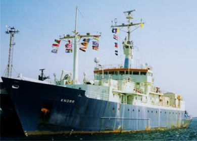

|  copyright - WHOI |
|
Knorr was delivered to WHOI in April 1970. R/V Knorr (AGOR-15)
was named in honor of Ernest R. Knorr, a distinguished early hydographic
engineer and cartographer who was appointed senior civilian and Chief Engineer
Cartographer of the US Navy Hydographic office in 1860.
Knorr is an all purpose scientific vessel designed to accommodate
a wide range of oceanographic tasks. Its forward and aft azimuthing propellers
allow the ship to move in any direction or to maintain a fixed position
in high winds and rough seas. The vessel’s other unique features, like
anti-roll tanks and ice strengthened bow, enable Knorr to travel
the world’s oceans.
In 1991 Knorr returned to WHOI after undergoing a 32 month major
mid-life refit. The vessel was upgraded and refitted at the McDermott Shipyard
in Amelia, Louisiana. An additional 34' was added to Knorr's length
at the middle providing room for a new laboratory and machinery space.
In addition, Knorr's twin azimuthing propulsion system was installed.
Sister ship: Melville, operated by Scripps Institution of Oceanography,
University of California, San Diego.